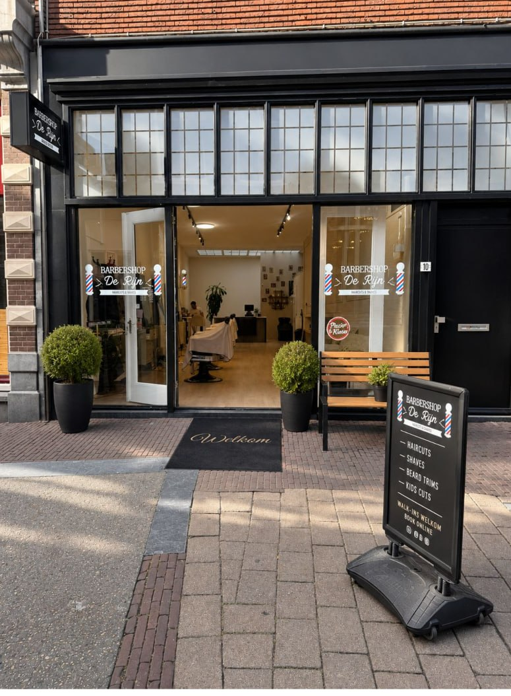

Van baard & snor modelleren tot een traditionele hot towel shave — je baard in perfecte vorm bij Barbershop de Rijn.
Bekijk beschikbare tijden
Een verzorgde baard maakt je look compleet. Onze barbers modelleren je baard en snor tot in detail, zetten strakke contouren met een shape-up of scheren je traditioneel met warme doek en open mes.
We adviseren je welke baardvorm bij je gezicht past en hoe je hem thuis onderhoudt. Loop binnen of boek direct.
Een shape-up is het strak zetten van de contouren van je baard en haarlijn — met een scheermes voor scherpe lijnen.
Een traditionele scheerbeurt met een warme doek om de haren te verzachten, gevolgd door scheren met open mes.
Walk-ins zijn welkom, maar een afspraak voorkomt wachten.